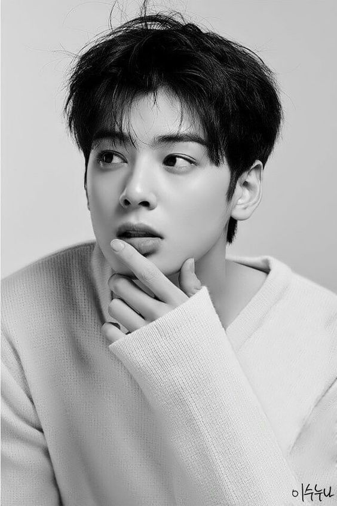

Stage name
Position
Birthday
Zodiac Sign
Birthplace
Height
Weight
Blood type
Specialties
|
Cha Eunwoo
Vocalist, Visual
March 30, 1997
Aries
Sabon District, Gunpo, Gyeonggi Province, South Korea
183 cm
64 kg
B
Swimming, Guitar, Violin, Piano, DJ-ing
|
FUN FACTS!

- Personality: he seems chic, but he is very loyal
- His nickname is “Morning Alarm” – he always wakes up earlier and starts waking up the rest of the members.
- His favorite color is Blue.
- He can play the Piano, Guitar, Flute & Violin
- He likes to eat at night.
- He said he loves wearing tank top in good weather (esp. summer)
- Jinjin revealed he & Eunwoo are the best English Speaker among ASTRO
- Between 2014 – 2015 he was the face of the Korean cosmetics company Shara Shara.
- In 2014 he appeared in KBS 9AM/PM News – Hallyu Star & Gangnam Style: Trainee Interview with Moonbin, Rocky, and Jinjin
- His role model is actor & singer Seo Kang Jun (5urprise)
- Eunwoo played MJ in the Korean Drama “The best hit” (2017).
|